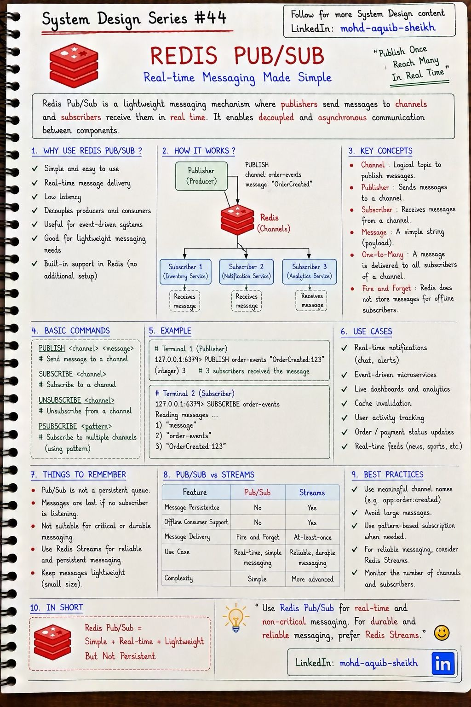
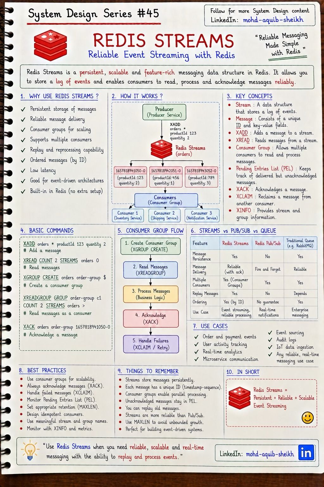
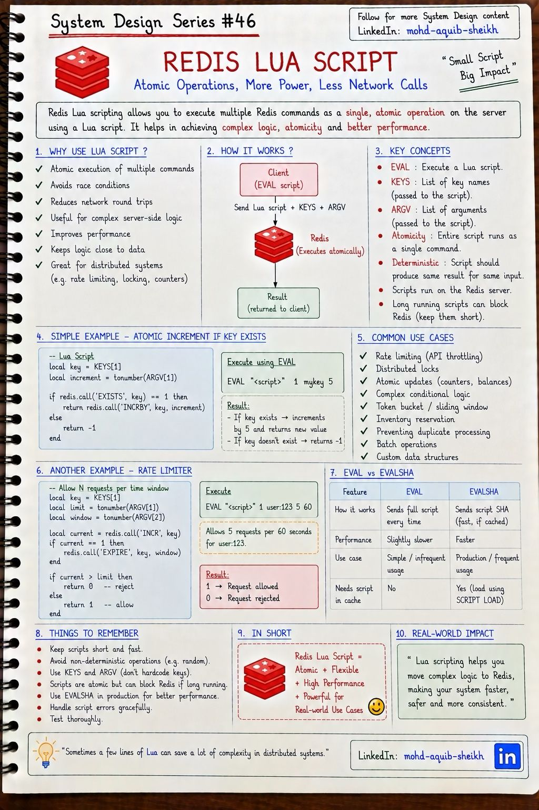
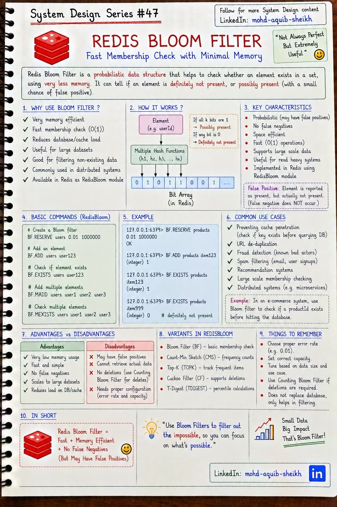
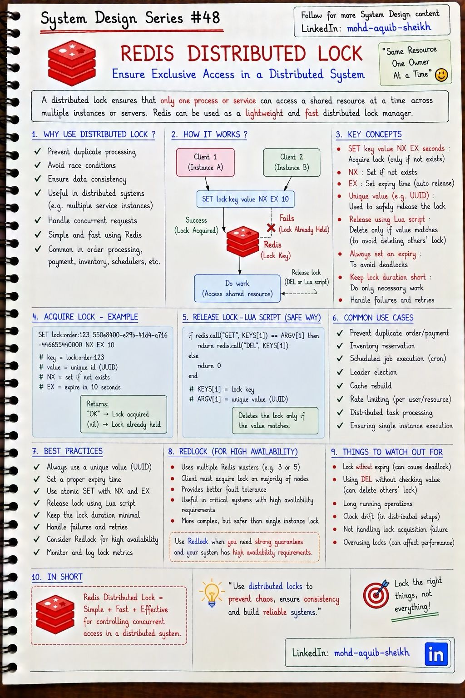

Redis: инструменты
Redis давно больше, чем кэш. Пять возможностей, из которых собирают типовые решения: мгновенная рассылка событий, надёжный журнал сообщений, атомарные скрипты, вероятностная проверка принадлежности и распределённая блокировка.
11.1Pub/Sub#44
Издатель отправляет сообщение в канал, все подписчики, подключённые в этот момент, получают его немедленно. Никакого хранения: Redis доставил сообщение тем, кто слушает, и забыл о нём — модель «fire and forget».


SUBSCRIBE order-events # подписаться на канал
PSUBSCRIBE order-* # подписаться по шаблону
PUBLISH order-events "OrderCreated:123"
(integer) 3 # число подписчиков, получивших сообщение
PUBLISH, вернувший 0, означает, что сообщение не получил никто, и это не ошибка.
Для чего подходит: события, потеря которых безвредна, потому что следующее событие исправит картину, — сброс локальных кэшей на всех экземплярах сервиса, рассылка по WebSocket-соединениям между узлами, обновление «живых» дашбордов. Для чего не подходит: заказы, платежи, любые задачи, которые должны быть выполнены.
11.2Streams#45
Stream — хранимый журнал сообщений, в который можно только дописывать. Сообщения остаются после прочтения, у каждого есть упорядоченный идентификатор, а группы потребителей распределяют работу между обработчиками и отслеживают подтверждения. По сути это «маленькая Kafka» внутри Redis.


XADD orders * productId 123 quantity 2 # добавить; * — сгенерировать ID вида 1657818941050-0
XGROUP CREATE orders order-group $ # создать группу потребителей
XREADGROUP GROUP order-group c1 COUNT 2 STREAMS orders > # прочитать новые сообщения как потребитель c1
XACK orders order-group 1657818941050-0 # подтвердить обработку
XAUTOCLAIM orders order-group c2 60000 0 # забрать сообщения, висящие без подтверждения дольше 60 с
Pending Entries List (PEL) — список сообщений, выданных потребителю, но ещё не подтверждённых. Если потребитель упал, его сообщения остаются в PEL, и другой потребитель забирает их через XCLAIM / XAUTOCLAIM. Отсюда гарантия «не менее одного раза» — и обязанность обработчика быть идемпотентным.
| Pub/Sub | Streams | Kafka | |
|---|---|---|---|
| Хранение | Нет | Да, в памяти Redis | Да, на диске |
| Доставка | Не более одного раза | Не менее одного раза (с ack) | Не менее одного раза / exactly-once |
| Подписчик был отключён | Сообщения потеряны | Дочитает позже | Дочитает позже |
| Повторное чтение истории | Нет | Да | Да |
| Масштаб одного журнала | — | Один ключ = один узел, объём ограничен памятью | Партиции на многих брокерах, терабайты |
XADD … MAXLEN ~ 100000) — иначе журнал съест память. Kafka нужна, когда событий много, история хранится долго, читателей много и важны партиции и порядок по ключу (тема 12). И помните о гарантиях Redis: при переключении на реплику подтверждённые сообщения могут пропасть (тема 10).
11.3Lua-скрипты#46
Скрипт на Lua выполняется на сервере Redis как одна команда: между его шагами не вклинится ни один другой клиент. Это решает главную проблему составных операций — гонку между «прочитал» и «записал» — и заменяет несколько сетевых обменов одним.


-- KEYS[1] = ключ счётчика, ARGV[1] = лимит, ARGV[2] = окно в секундах
local current = redis.call('INCR', KEYS[1])
if current == 1 then
redis.call('EXPIRE', KEYS[1], tonumber(ARGV[2]))
end
if current > tonumber(ARGV[1]) then return 0 else return 1 end
-- вызов: EVAL "<текст скрипта>" 1 user:123 5 60 — вернёт 1 (разрешено) или 0 (отклонено)
Без скрипта между INCR и EXPIRE клиент может упасть — и счётчик останется без срока жизни навсегда, заблокировав пользователя. В скрипте обе команды выполняются неразрывно.
EVALиEVALSHA.EVALпередаёт текст скрипта при каждом вызове.SCRIPT LOADзагружает скрипт один раз и возвращает SHA1-хэш, аEVALSHAвызывает его по хэшу — меньше трафика. Клиентские библиотеки делают это автоматически.- Ключи — только через
KEYS. В кластере Redis по ним определяет узел, и все ключи скрипта должны лежать в одном слоте (тема 10).
- «Атомарно» не значит «с откатом». Скрипт не прерывается другими командами, но если он упал на середине, уже выполненные записи остаются. Это изоляция, а не транзакция в смысле ACID.
- Долгий скрипт останавливает весь Redis — тот же единственный поток. Никаких циклов по большим коллекциям; скрипт должен завершаться за доли миллисекунды.
- Redis Functions (с версии 7.0) — развитие идеи: именованные функции, которые хранятся на сервере, реплицируются и переживают перезапуск; вызываются через
FCALL.
11.4Фильтр Блума#47
Вероятностная структура данных, которая отвечает на вопрос «есть ли элемент в множестве?» за постоянное время и с очень малым расходом памяти. Цена — асимметричная ошибка: ответ «точно нет» всегда верен, ответ «возможно, есть» иногда ложен.


Как работает. Есть массив из m бит и k хэш-функций. Добавление: вычислить k хэшей элемента и установить соответствующие биты в 1. Проверка: если хотя бы один из k битов равен 0 — элемента точно не было; если все равны 1 — вероятно, был (но биты могли выставить другие элементы — это и есть ложное срабатывание).
| Допустимая доля ложных срабатываний | Бит на элемент | Хэш-функций | Память на 1 млн элементов |
|---|---|---|---|
| 1% | ≈ 9,6 | 7 | ≈ 1,2 МБ |
| 0,1% | ≈ 14,4 | 10 | ≈ 1,8 МБ |
Сравните: множество из миллиона UUID в виде строк заняло бы десятки мегабайт. Размер фильтра не зависит от размера самих элементов.
BF.RESERVE users 0.01 1000000 # ошибка 1%, ёмкость 1 млн
BF.ADD users user123
BF.EXISTS users user123 # 1 — возможно есть
BF.EXISTS users user999 # 0 — точно нет
Главное применение в системном дизайне — защита от cache penetration (тема 09): перед обращением к кэшу и базе проверить, существует ли вообще такой идентификатор. «Точно нет» отсекает запрос сразу; редкое ложное «возможно» просто приводит к обычному запросу в базу, который вернёт пустой результат. Другие применения: «этот логин уже занят?», дедупликация URL у поискового робота, «показывали ли уже эту рекомендацию».
- Удалять нельзя: сброс бита задел бы другие элементы. Если нужны удаления — Cuckoo filter (
CF.*) или счётный фильтр Блума. - Ёмкость задаётся заранее. При переполнении доля ложных срабатываний растёт; RedisBloom в этом случае наращивает фильтр слоями, что стоит памяти и скорости.
- Про «модуль RedisBloom». Конспект называет фильтр модулем — так было исторически (Redis Stack). Начиная с Redis 8 вероятностные структуры входят в основную поставку. В управляемых сервисах уточняйте, поддерживаются ли команды
BF.*. - Родственные структуры из того же набора: Count-Min Sketch — приблизительная частота элементов, Top-K — самые частые, T-Digest — перцентили.
11.5Распределённая блокировка#48
Когда у сервиса несколько экземпляров, synchronized и ReentrantLock не помогают — они действуют в пределах одного процесса. Распределённая блокировка гарантирует, что общий ресурс в каждый момент обрабатывает только один экземпляр: задача по расписанию выполняется один раз, один заказ не обрабатывается дважды.


SET lock:order:123 550e8400-e29b-41d4-a716-446655440000 NX EX 10
# NX — установить, только если ключа нет; EX 10 — срок жизни 10 с
# "OK" — блокировка получена, (nil) — уже занята
-- освобождение: удалить, только если блокировка всё ещё наша
if redis.call("GET", KEYS[1]) == ARGV[1] then
return redis.call("DEL", KEYS[1])
else
return 0
end
| Деталь | Зачем | Что будет без неё |
|---|---|---|
NX и EX в одной команде | Атомарность захвата | SETNX + EXPIRE отдельно: упали между ними — блокировка вечная |
| Срок жизни | Блокировка освободится, даже если владелец упал | Взаимоблокировка до ручного вмешательства |
| Уникальное значение (UUID) | Отличить свою блокировку от чужой | Удалим блокировку, которую уже взял другой |
| Освобождение Lua-скриптом | «Проверить и удалить» неразрывно | Между GET и DEL блокировка истечёт и перейдёт к другому |
- Продление (watchdog): фоновый поток продлевает срок жизни, пока владелец жив. Так работает
RLockв Redisson. Сужает окно, но не закрывает его. - Fencing token — настоящее решение: вместе с блокировкой выдаётся монотонно растущий номер, и сам ресурс отклоняет запись с номером меньше уже виденного. В базе данных это то же, что оптимистичная блокировка по версии (тема 07).
11.6Интерактив: фильтр Блума своими руками
Размер под задачу
Для n элементов и вероятности ошибки p: бит m = −n·ln p / (ln 2)², хэш-функций k = (m/n)·ln 2. На 1% ошибок нужно ~9,6 бита на элемент: миллиард ключей — 1,2 ГБ вместо десятков гигабайт самих ключей.
Где применяется
LSM-базы (Cassandra, RocksDB): не читать с диска файл, в котором ключа точно нет. Защита кэша от запросов несуществующих ключей. «Занят ли логин», списки вредоносных URL в браузере, дедупликация.
11.7Самопроверка
Какие ошибки возможны у фильтра Блума?
- Ложные отрицания
- И ложные отрицания, и ложные срабатывания
- Только ложные срабатывания: «возможно, есть», когда элемента нет
- Никаких
Почему Redis Pub/Sub не подходит для надёжной доставки задач?
- Он слишком медленный
- Сообщение получают только подключённые сейчас подписчики и нигде не сохраняется: отключился — пропустил
- Он не поддерживает шаблоны каналов
- В нём нет каналов
Зачем проверку и изменение значения в Redis оформляют Lua-скриптом?
- Скрипт выполняется атомарно: между чтением и записью не вклинится другой клиент
- Lua быстрее Redis
- Для шифрования
- Чтобы обойти лимит памяти
Нужно сбросить локальный кэш справочника на всех 20 экземплярах сервиса. Pub/Sub или Streams?
Pub/Sub. Сообщение должны получить все экземпляры одновременно (в Streams группа потребителей отдала бы его одному), а потеря не критична, если у локального кэша есть TTL как страховка. Экземпляр, пропустивший сообщение при переподключении, обновится по TTL.
Что такое PEL в Redis Streams и что с ним случается, если потребитель упал?
Pending Entries List — сообщения, выданные потребителю группы и не подтверждённые через XACK. При падении потребителя они остаются в PEL и не выдаются другим автоматически. Другой потребитель должен забрать их через XAUTOCLAIM (или XPENDING + XCLAIM) по истечении времени простоя. Обработчик должен быть идемпотентным: сообщение может быть обработано дважды.
Почему лимитер из INCR и EXPIRE двумя отдельными командами ненадёжен?
Между командами клиент может упасть или потерять соединение: счётчик создан, срок жизни не установлен. Ключ останется навсегда, счётчик дойдёт до лимита, и пользователь будет заблокирован бессрочно. Lua-скрипт выполняет обе команды как одну.
Фильтр Блума ответил «возможно, есть». Что делает система дальше и почему это не проблема?
Выполняет обычную проверку — запрос в кэш и базу. В ~1% случаев (при настроенной ошибке 1%) элемента на самом деле нет, и запрос вернёт пусто. Это лишь небольшая лишняя работа. Важно, что обратной ошибки не бывает: «точно нет» никогда не отсечёт существующий элемент.
Зачем в распределённой блокировке уникальное значение и почему нельзя освобождать её простым DEL?
Если работа заняла больше срока жизни, блокировка истекла и её взял другой экземпляр. Простой DEL удалит уже чужую блокировку, и внутрь войдёт третий. Уникальное значение позволяет проверить владельца, а Lua-скрипт делает проверку и удаление неразрывными.